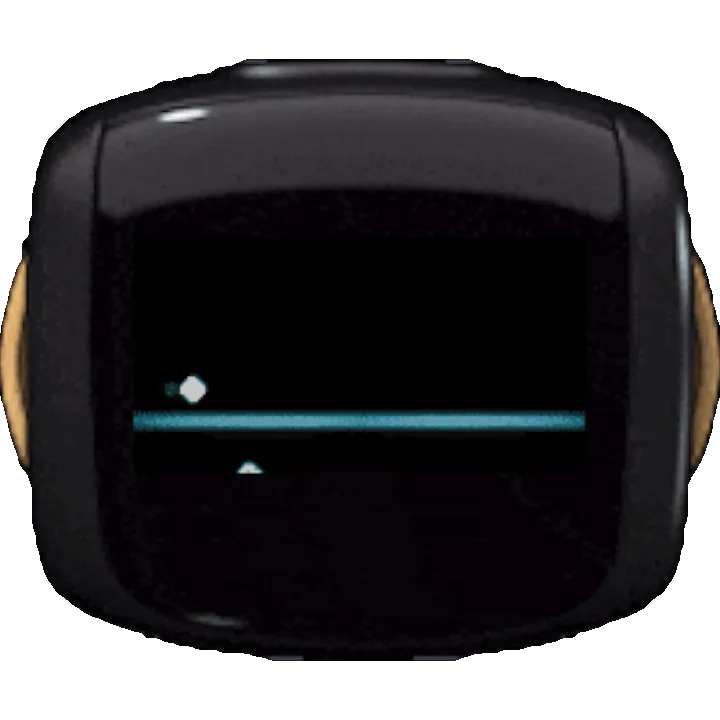

← Back to all routesImage published on the upstream source page for “wire-pod”; no separate image license was stated. View image source ↗
wire-pod
- Reuse Vector robots with community voice services and optional knowledge-question backends.
- 3/5 dimensions have verifiable sources
- Uses source-backed feasibility, docs/community, and practical-value dimensions; unpriced cost and incompletely assessed bricking/security risk remain null.

What it can become
- Voice assistant
- Hardware scope Anki / Digital Dream Labs Vector robots within the setup documentation's scope.
- Category Robots
- AI relationship AI functionality
- Route type Specific modification route
- Sources last checked 2026-10-20
Before you start
- Method Cloud service replacement
- Difficulty Advanced
- Disassembly Not required
- Soldering Not required
- Cloud API / service Knowledge service optional
- Stop condition Firmware and pairing must match. Having a server alone does not prove any Vector can be restored.
- Firmware Unknown
- Region Unknown
- Used-price range 120–140 USD · Used Vector examples including a charging station and, in the cited examples, cube/case accessories; shipping excluded.
- Modification cost No reliable sourcePrice source 1 ↗
- Possible cost Always-on server
Risk and recovery
- Data-loss risk Possible
- Bricking / boot-failure risk Workflow-dependent
- Recovery route Keep pairing and firmware information. Redeploying the server alone does not guarantee a fix for firmware or hardware faults.
- Recovery guide ↗ (no verified link)
Practical decision notes
- What was holding it back Some Vector voice capabilities depend on external services whose availability affects continued use.
- What it can do afterwards A self-run wire-pod service receives and processes voice requests, with optional knowledge services.
- Assessment This moves service dependencies to a host you maintain. It cannot repair the robot's battery, display or network hardware. Follow current official setup instructions for Vector 1.0/2.0; server certificates, networking and device configuration all need acceptance checks. Cloud models versus other backends affect privacy, cost and offline capability. A self-hosted service does not automatically make the whole pipeline offline.
- A good fit if People with a working Vector who can run and maintain LAN services over time.
- Skip this route if People whose robot cannot power on or who do not want to maintain an always-on host.
Checks after the build
- Record the device version and check server-to-robot networking.
- Verify local voice commands and optional knowledge questions.
- Retest after rebooting server and robot, recording external-network dependencies.
Evidence, maintenance, and sources
- E1 · Source code & deployment docs The README specifies Vector 1.0/2.0 and production-robot support, with installation wiki and troubleshooting links.
- Hands-on status KitAgain has not tested this device hands-on.
- Maintenance Repository not archived
- Last GitHub push 2026-10-15T01:04:49Z
- Repository license MIT
- A recent push does not prove model compatibility, and a root license does not automatically cover firmware, models, brands, or third-party components.
- Upstream documentation ↗2026-10-20Use this to understand the outcome, how to start and the limits stated by the project.https://github.com/kercre123/wire-pod/blob/main/README.md
Project identity and verified author profiles
- kercre123 · GitHub ↗ — Source-repository owner account; this does not establish sole authorship